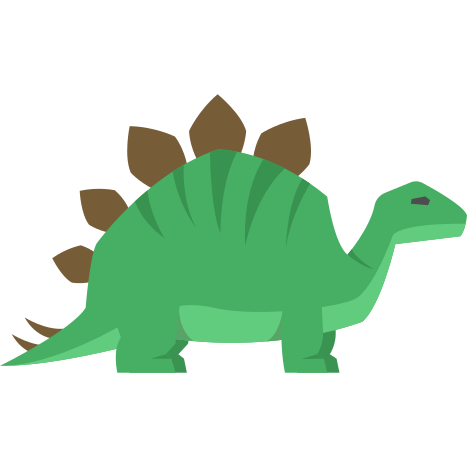

<ion-view view-title="Geodiversidades">
	<ion-content class="bg-gradient">

		<div class="card">
			<a class="item item-thumbnail-left" ui-sref="protected.flora">
				
				<h2>Flora</h2>
				<p>Veja mais...</p>
			</a>
		</div>

		<div class="card" ui-sref="protected.fauna">
			<a class="item item-thumbnail-left" >
				
				<h2>Fauna</h2>
				<p>Veja mais...</p>
			</a>
		</div>

		<div  class="card">

			<a class="item item-thumbnail-left" >
				
				<h2>História</h2>
				<p>Veja mais...</p>
			</a>
		</div>

		<div class="card">
			<a class="item item-thumbnail-left" ui-sref="protected.fosseis">
				
				<h2>Fossil</h2>
				<p>Veja mais...</p>
			</a>
		</div>
	</ion-content>

</ion-view>